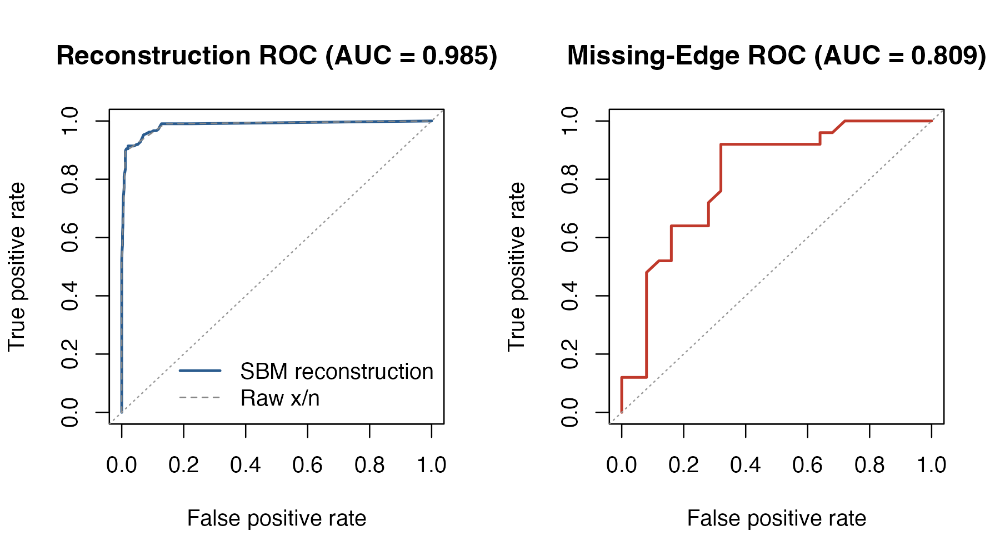

Network Reconstruction: Uncertain Edges, Triadic Closure & Dynamics
Source:vignettes/network-reconstruction.Rmd
network-reconstruction.RmdThis article brings together four reconstruction demos
(uncertain_reconstruction, triadic_closure,
dynamics_reconstruction, and
empirical_dynamics), covering Bayesian inference of latent
networks from noisy measurements, triadic closure mechanisms, and
dynamical or behavioral time series.
1. Uncertain network reconstruction & missing-edge prediction
When edges are observed with false negatives (\(p\)) and false positives (\(q\)) over repeated trials,
measured_block_state() jointly infers the underlying
network \(A\), the hierarchical SBM
communities, and the error rates \((p,
q)\). For heterogeneous errors or extraneous probabilities,
rgraphtool also provides
mixed_measured_block_state(),
uncertain_block_state(), and fast EM latent Poisson
multigraph inference (latent_multigraph()).
set.seed(42)
N <- 45L
b_true <- rep(1:3, each = 15L)
all_pairs <- t(utils::combn(N, 2L))
same_blk <- b_true[all_pairs[, 1L]] == b_true[all_pairs[, 2L]]
true_A <- as.integer(stats::runif(nrow(all_pairs)) < ifelse(same_blk, 0.65, 0.02))
# Repeated noisy observations (n = 3 trials, FN p = 0.20, FP q = 0.05)
n_trials <- 3L
x_obs <- stats::rbinom(nrow(all_pairs), n_trials, ifelse(true_A == 1L, 0.80, 0.05))
keep <- x_obs > 0L
g_obs <- graph_create(N, directed = FALSE)
graph_add_edges(
g_obs,
all_pairs[keep, , drop = FALSE],
properties = list(n = rep(n_trials, sum(keep)), x = x_obs[keep])
)
st_meas <- measured_block_state(
g_obs, n = "n", x = "x",
n_default = n_trials, x_default = 0L,
nested = TRUE
)
rec_meas <- reconstruct_network(st_meas, nsamples = 120L, burnin = 100L, thin = 2L)
print(rec_meas)
#> <rgraphtool_reconstruction (measured)>
#> Marginal edges observed: 384 | Consensus edges (p >= 0.50): 197
#> Final description length: 1186.7550 | Moves: 13245 / 108951
#> Posterior mean FN rate (p): 0.1959 | FP rate (q): 0.0501
ek <- function(u, v) paste0(pmin(u, v), ":", pmax(u, v))
idx <- match(ek(all_pairs[, 1L], all_pairs[, 2L]),
ek(rec_meas$edges$from, rec_meas$edges$to))
p_hat <- ifelse(is.na(idx), 0, rec_meas$edges$prob[idx])
ev_rec <- evaluate_edge_prediction(p_hat, true_A)
ev_raw <- evaluate_edge_prediction(x_obs / n_trials, true_A)
# Fast EM latent Poisson multigraph (Peixoto 2020)
g_true <- graph_add_edges(graph_create(N, directed = FALSE),
all_pairs[true_A == 1L, , drop = FALSE])
em_res <- latent_multigraph(g_true, epsilon = 1e-10)
print(em_res)
#> <rgraphtool_latent_multigraph (undirected)>
#> Simple edges: 210 | Nonzero self-loops: 45 | Total expected weight: 245.768
#> EM iterations: 21 | Final delta: 3.988e-11
# Missing-edge prediction on held-out edges
true_edges <- all_pairs[true_A == 1L, , drop = FALSE]
non_edges <- all_pairs[true_A == 0L, , drop = FALSE]
hold_n <- min(25L, floor(nrow(true_edges) * 0.25))
hold_idx <- sample(nrow(true_edges), hold_n)
g_train <- graph_add_edges(graph_create(N, directed = FALSE),
true_edges[-hold_idx, , drop = FALSE])
cands <- rbind(true_edges[hold_idx, , drop = FALSE],
non_edges[sample(nrow(non_edges), hold_n), , drop = FALSE])
labels <- c(rep(1L, hold_n), rep(0L, hold_n))
pred <- predict_edges(g_train, cands, nsamples = 50L, burnin = 30L, nested = TRUE)
ev_pred <- evaluate_edge_prediction(pred, labels)
old_par <- graphics::par(mfrow = c(1L, 2L))
graphics::plot(ev_rec$roc$fpr, ev_rec$roc$tpr, type = "l", lwd = 2, col = "#2b5c8f",
xlab = "False positive rate", ylab = "True positive rate",
main = sprintf("Reconstruction ROC (AUC = %.3f)", ev_rec$roc_auc))
graphics::lines(ev_raw$roc$fpr, ev_raw$roc$tpr, lty = 2, col = "#888888")
graphics::abline(0, 1, lty = 3, col = "gray60")
graphics::legend("bottomright", legend = c("SBM reconstruction", "Raw x/n"),
col = c("#2b5c8f", "#888888"), lty = c(1, 2), lwd = c(2, 1), bty = "n")
graphics::plot(ev_pred$roc$fpr, ev_pred$roc$tpr, type = "l", lwd = 2, col = "#c0392b",
xlab = "False positive rate", ylab = "True positive rate",
main = sprintf("Missing-Edge ROC (AUC = %.3f)", ev_pred$roc_auc))
graphics::abline(0, 1, lty = 3, col = "gray60")
graphics::par(old_par)2. Disentangling homophily and triadic closure
latent_closure_block_state() and
infer_triadic_closure() separate edges generated by a
substrate SBM from edges formed by closing open two-paths (Peixoto 2022
PRX).
set.seed(2026)
N_tc <- 24L
cyc1 <- rbind(cbind(1:11, 2:12), c(12L, 1L))
cyc2 <- rbind(cbind(13:23, 14:24), c(24L, 13L))
bridges <- matrix(c(1L, 13L, 5L, 17L, 9L, 21L), ncol = 2L, byrow = TRUE)
sub_edges <- rbind(cyc1, cyc2, bridges)
cl1 <- cbind(seq(1L, 11L, by = 2L), (seq(3L, 13L, by = 2L) - 1L) %% 12L + 1L)
cl2 <- cbind(seq(13L, 23L, by = 2L), 12L + ((seq(3L, 13L, by = 2L) - 1L) %% 12L + 1L))
cl_edges <- rbind(cl1, cl2)
g_tc <- graph_add_edges(graph_create(N_tc, directed = FALSE), rbind(sub_edges, cl_edges))
st_tc <- latent_closure_block_state(g_tc, L = 1L, nested = TRUE)
res_tc <- infer_triadic_closure(st_tc, nsamples = 180L, burnin = 150L, thin = 2L)
is_closure <- ek(res_tc$edges$from, res_tc$edges$to) %in% ek(cl_edges[, 1L], cl_edges[, 2L])
ev_tc <- evaluate_edge_prediction(res_tc$edges$closure_prob, as.integer(is_closure))
cat(sprintf(
"Mean closure_prob: true closures = %.3f vs. substrate = %.3f | ROC-AUC = %.4f\n",
mean(res_tc$edges$closure_prob[is_closure]),
mean(res_tc$edges$closure_prob[!is_closure]),
ev_tc$roc_auc
))
#> Mean closure_prob: true closures = 0.912 vs. substrate = 0.016 | ROC-AUC = 1.00003. Reconstruction from synthetic dynamics (Ising, epidemics, Gaussian, Potts)
When only node states or time series are observed,
rgraphtool supports all 10 graph-tool
dynamical/behavioral models with SBM + quantized MDL or \(L_1\) priors, plus native C++ forward
simulators.
set.seed(2026)
eval_graph <- function(rec, g_true) {
n_v <- graph_num_vertices(g_true)
dir <- isTRUE(g_true$directed)
key <- function(u, v) if (!dir) paste0(pmin(u, v), ":", pmax(u, v)) else paste0(u, ":", v)
te <- graph_edges(g_true)
tk <- unique(key(te[, 1L], te[, 2L]))
ap <- if (dir) {
eg <- expand.grid(u = seq_len(n_v), v = seq_len(n_v))
if (!rec$state$self_loops) eg <- eg[eg$u != eg$v, , drop = FALSE]
cbind(eg$u, eg$v)
} else {
t(utils::combn(n_v, 2L))
}
pk <- key(ap[, 1L], ap[, 2L])
y <- as.integer(pk %in% tk)
rk <- key(rec$edges$from, rec$edges$to)
idx <- match(pk, rk)
sc <- ifelse(is.na(idx), 0, abs(rec$edges$weight[idx]) * rec$edges$prob[idx])
ev <- evaluate_edge_prediction(sc, y, threshold = 1e-6)
c(roc_auc = ev$roc_auc, f1 = ev$f1, n_pred = nrow(rec$edges), n_true = sum(y))
}
# Ground-truth undirected 2-community graph (20 vertices, 26 edges)
g_u <- graph_create(20L, directed = FALSE)
graph_add_edges(g_u, rbind(
cbind(1:9, 2:10), c(10L, 1L), c(1L, 5L), c(3L, 8L),
cbind(11:19, 12:20), c(20L, 11L), c(11L, 15L), c(13L, 18L),
c(1L, 11L), c(6L, 16L)
))
# 1. Equilibrium Ising: SBM+L1 vs pure L1 regularization path
s_pi <- simulate_ising(g_u, weights = 0.55, theta = 0,
n_samples = 600L, burnin = 300L, thin = 4L, mode = "equilibrium")
st_pi <- pseudo_ising_block_state(s_pi, nested = TRUE, xdelta = 1e-4, tdelta = 1e-4)
rec_pi <- reconstruct_dynamics(st_pi, niter = 18L, sbm = TRUE,
xdist = FALSE, tdist = FALSE, xl1 = 1.0, tl1 = 0.1)
eval_graph(rec_pi, g_u)
#> roc_auc f1 n_pred n_true
#> 1 1 26 26
l1_path <- reconstruct_l1_path(st_pi, xl1_values = c(1, 5, 10, 20),
sbm = FALSE, niter = 12L, truth = g_u)
print(l1_path)
#> <rgraphtool_l1_path (4 lambda values, best BIC at xl1 = 20)>
#> xl1 n_edges nll entropy bic l1_norm precision recall f1
#> 20 99 4516.546 6397.560 9794.327 15.92459 0.2626263 1 0.4160000
#> 10 134 4463.823 6353.781 9912.772 19.55828 0.1940299 1 0.3250000
#> 5 154 4442.849 6380.869 9998.765 22.36982 0.1688312 1 0.2888889
#> 1 176 4434.599 6591.818 10122.997 25.14198 0.1477273 1 0.2574257
#> roc_auc
#> 1
#> 1
#> 1
#> 1
# 2. Directed SIS epidemic cascades
g_d <- graph_create(16L, directed = TRUE)
e_d <- rbind(cbind(1:15, 2:16), c(16L, 1L), c(1L, 5L), c(5L, 9L), c(9L, 13L), c(13L, 1L))
graph_add_edges(g_d, e_d)
casc <- simulate_epidemics(g_d, transmission = 0.45, spontaneous = 0.01,
recovery = 0.3, model = "SIS", n_steps = 60L, n_cascades = 20L)
st_ep <- epidemics_block_state(casc, directed = TRUE, nested = FALSE,
xdelta = 1e-4, tdelta = 1e-4)
rec_ep <- reconstruct_dynamics(st_ep, niter = 15L, sbm = TRUE,
xdist = FALSE, tdist = FALSE, xl1 = 1.0, tl1 = 0.1)
tp_ep <- dynamics_transmission_probs(rec_ep)
c(eval_graph(rec_ep, g_d), median_t_hat = stats::median(tp_ep$edges$transmission_prob))
#> roc_auc f1 n_pred n_true median_t_hat
#> 1.0000000 1.0000000 20.0000000 20.0000000 0.44958544. Empirical financial partial-correlation network
For financial time series in
pseudo_normal_block_state(), convert price levels \(P_i(t)\) to stationary log-returns \(r_i(t) = \ln(P_i(t+1)/P_i(t))\),
standardize each series to zero mean and unit variance, and set
positive = TRUE so the reconstructed precision matrix \(\Omega\) is strictly positive-definite.
prices <- as.matrix(datasets::EuStockMarkets)
log_ret <- diff(log(prices))
z_ret <- t(scale(log_ret))
idx_names <- colnames(prices)
set.seed(42)
st_eu <- pseudo_normal_block_state(
z_ret, fix_mean = TRUE, positive = TRUE,
nested = FALSE, xdelta = 1e-4, tdelta = 1e-4
)
rec_eu <- reconstruct_dynamics(
st_eu, niter = 25L, sbm = TRUE,
xdist = FALSE, tdist = FALSE, xl1 = 1.0, tl1 = 0.1
)
prec_eu <- dynamics_precision_matrix(rec_eu)
pcor_eu <- prec_eu$partial_correlation
dimnames(pcor_eu) <- list(idx_names, idx_names)
round(pcor_eu, 3)
#> DAX SMI CAC FTSE
#> DAX 1.000 0.390 0.421 0.214
#> SMI 0.390 1.000 0.155 0.249
#> CAC 0.421 0.155 1.000 0.367
#> FTSE 0.214 0.249 0.367 1.000
cat(sprintf("Minimum eigenvalue of precision matrix: %.4f (strictly SPD)\n",
min(eigen(prec_eu$precision, symmetric = TRUE, only.values = TRUE)$values)))
#> Minimum eigenvalue of precision matrix: 0.2242 (strictly SPD)